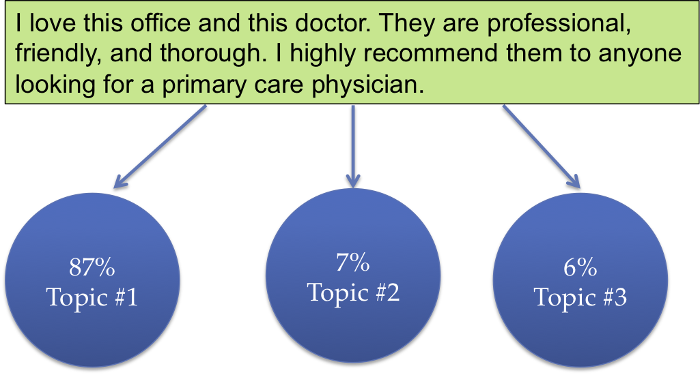
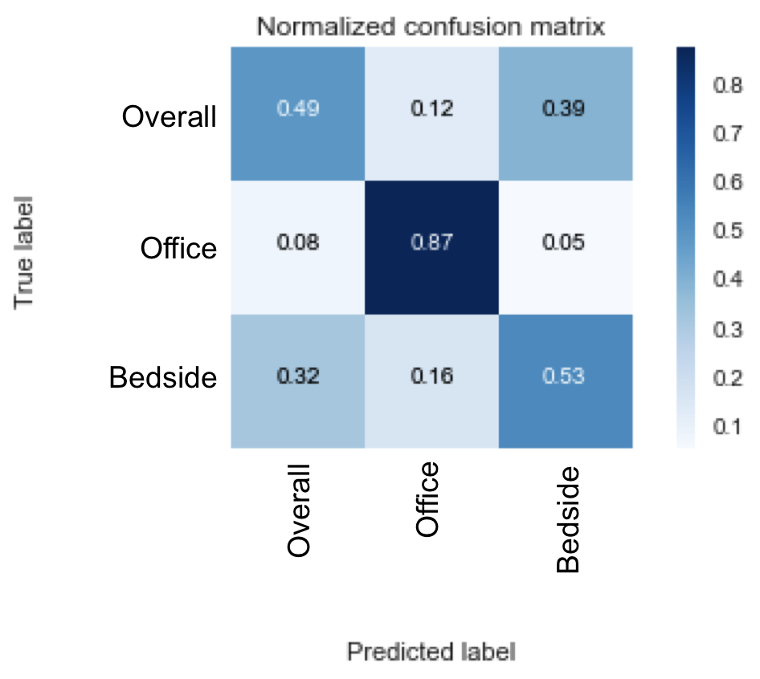

Review Distiller is a web app that extracts useful information from doctor reviews to help users choose a new doctor without reading through hundreds of reviews.
How do I use Review Distiller?
Copy and paste the url from any doctor’s page on ZocDoc into the search bar on ayeletberger.com/reviewdistiller and click the “Distill Reviews!” button. The app will retrieve and process all of that doctor’s reviews so you don’t have to! The app generates a doctor overview with the following information:
Best matching review for each of three topics (overall experience, office administration/wait time, and bedside manner)
Breakdown of reviews by topic (what percent of the reviews talk about each of the three topics)
Number of reviews for that doctor
Number of individual patients who have written reviews (this excludes anonymous reviews)
Number of patients who have written more than one review (this indicates that they have returned to the same doctor for more than one appointment)
Why did I build Review Distiller?
User reviews play a huge role in how consumers make decisions. Whether you are trying to choose a restaurant, a commercial product, or a new exercise class, you can find many of options online, each of them with hundreds of user reviews. This is a great source of information, but it can often be time-consuming and overwhelming. Choosing a doctor is an example of this type of information overload.
The website ZocDoc allows users to search for doctors based on location and read reviews that patients have written. A quick search for primary care physicians in Manhattan turns up hundreds of doctors, many of whom have over 100 patient reviews. 95% of these doctors have an average rating of over 4.2 stars (out of 5). It is difficult to distinguish between doctors without reading through thousands of patient reviews. Review Distiller is a web app filters through patient reviews and gives users the information they need in a concise format.
Design Considerations
One of the first challenges of this project was defining the scope. I wanted to distill the useful information from a doctor's reviews, but was unsure how to best define “useful.” I thought about a few different factors that affect the way I make decisions about which doctor to choose.
What topics come up most often in the reviews?
How many reviews does this doctor have?
How does this doctor compare to others in the same area?
How long has this doctor been practicing and do patients often return for multiple appointments?
At first, I considered giving doctors a numerical score based on how many positive or negative reviews they received. Upon further consideration, I realized that a score would not be helpful. ZocDoc already displays the average star rating, and 95% of doctors have 4.2 stars (out of 5) or higher. Choosing a doctor is a nuanced decision that cannot be reduced to a single numerical score. People read reviews when making a decision because they want more detailed information and a narrative. Instead of reducing the reviews to a numerical representation, I decided to identify the topics that commonly appear and then show the best matching review for each of these topics. I also include numerical information about what percentage of reviews are about each topic, how many reviews there are, and how many different patients left reviews. This information is useful in making comparisons to other doctors in the area.
How Review Distiller Works
Topic Modeling:
In order to identify common topics in the reviews, I used an unsupervised clustering algorithm called latent Dirichlet allocation (LDA). This model assumes each topic is made up of a distribution of words and each document is some combination of these topics. The model discovers topics within the documents by learning groups of words that frequently appear together,. A more in-depth explanation can be found here.
Interpreting the topics is a primary challenge when implementing LDA. The algorithm returns topics as a list of words and their probabilities of appearing in those topics. It is up to the user to decipher what each topic is about. My LDA model identified the following clusters of words:
From these clusters, I identified 3 topics:
Overall Experience
Office Administration and Wait Time
Bedside Manner
Below, you can see an interactive visualization of these topics. Move your mouse over each topic to see the word frequency distribution on the right.
Choosing Topics:
LDA does not tell you the topic of each review. It tells you a distribution of topics that make up the review. See below for an illustration of this concept:

I decided that for each review, if the most dominant topic score was more than twice the score for the next most dominant topic, I would classify that review as a single topic. Using this metric, my LDA model was able to classify 70% of the reviews as single topic.
Validating the Model
Validating unsupervised algorithms can be challenging, because there is no ground truth to compare with your model’s results. There are a number of statistical measures that are commonly used to validate LDA models. The most common methods include the perplexity and topic coherence. These measure how well the model actually represents the data, but they do not directly address the question of whether the topics identified by the model are interpretable.
I wanted to validate my model in a way that focused on topic interpretability. I chose 50 reviews from each topic (as classified by the LDA model), scrambled them so that I did not know which review came from which topic, and then hand labeled them. Here is a confusion matrix showing how well my topic labels matched with the LDA topic labels:

The true positive rate for Office Administration/Wait Time was 87%. For the other two topics, Overall Experience, and Bedside Manner, the true positive was closer to 50%. This is because those two topics are not as distinct as the topic of office administration and wait time. The overall accuracy is 59%.
Future Directions
In summary, my web app gives users the information they need in a concise format so they do not need to read through hundreds of reviews to make a decision about a doctor. In the future, I would like to improve the accuracy of the model by using guided LDA, a variation of LDA where you seed the topic clusters with words instead of starting from a random state. This could result in better separation of the topics.
About Me
My name is Ayelet Berger. I'm an aspiring data scientist, and I love finding smart ways to approach interesting problems. I am currently a fellow at Insight Data Science, where I completed a project called Review Distiller, hosted here. At Insight, I've gained experience in nlp, machine learning, and data science in general. Prior to Insight, I completed my PhD in Materials Science at Columbia University. I've also spent some time teaching math and physics at the high school and undergraduate level.